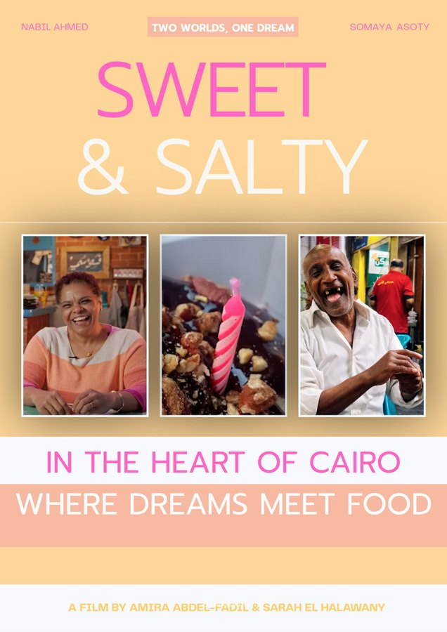
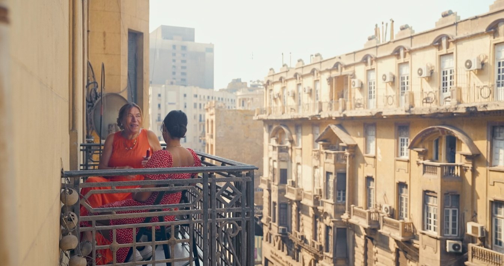
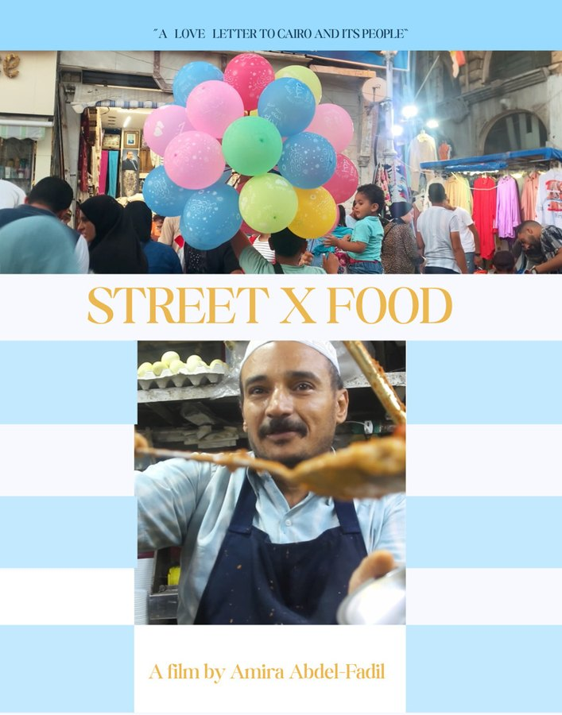
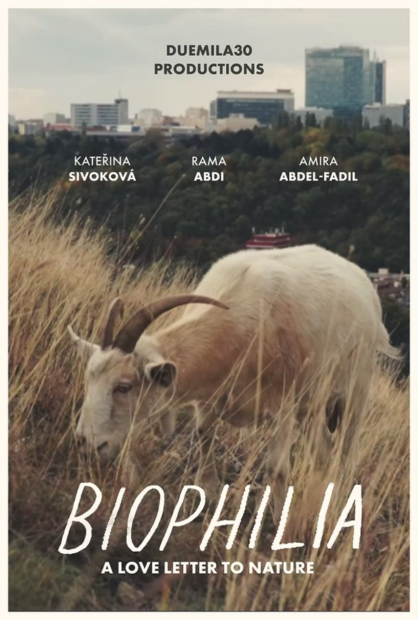
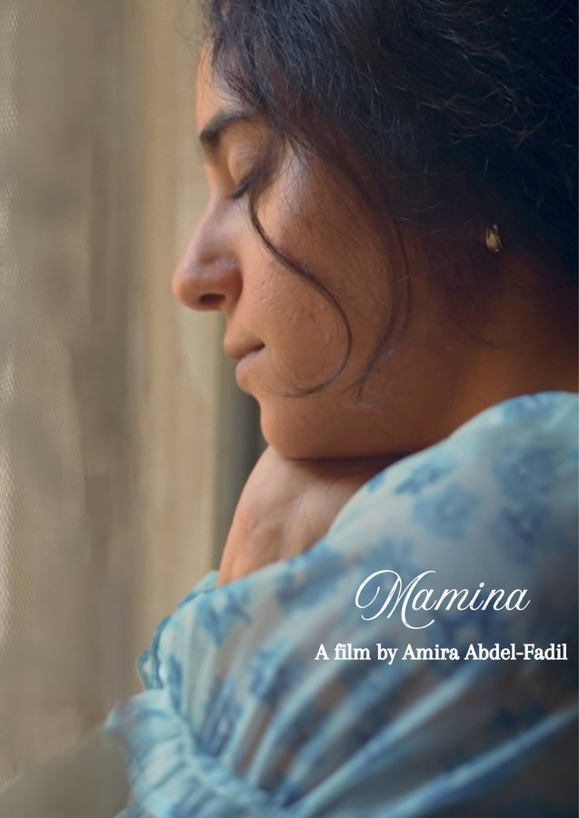
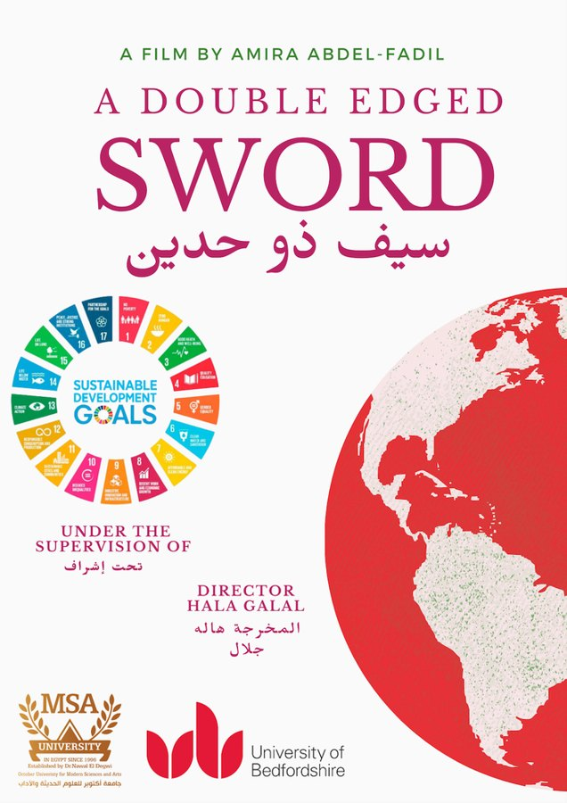
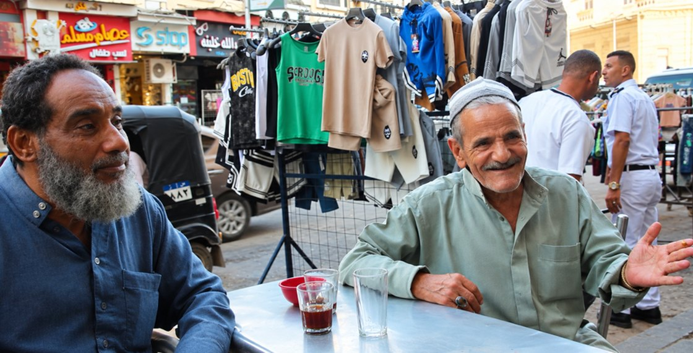
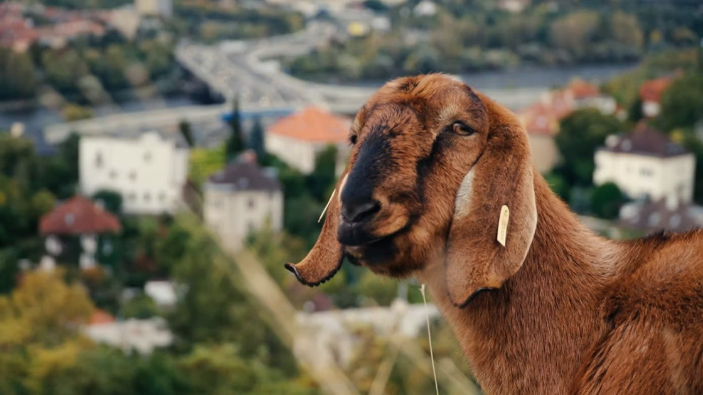
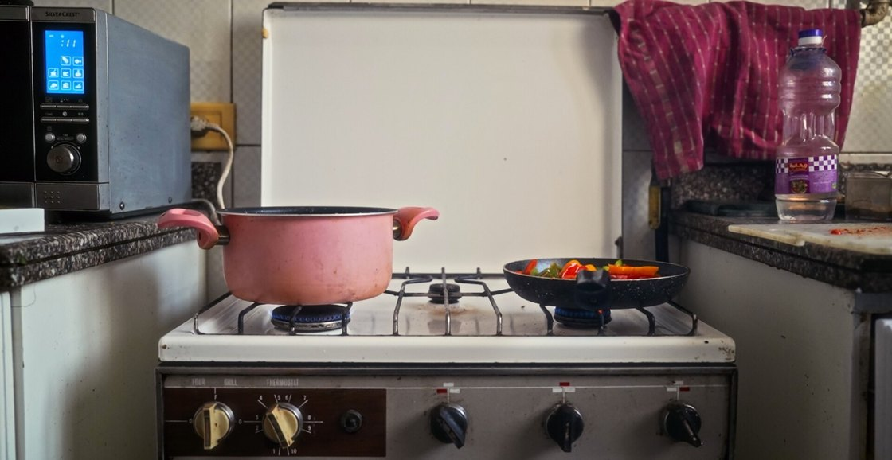
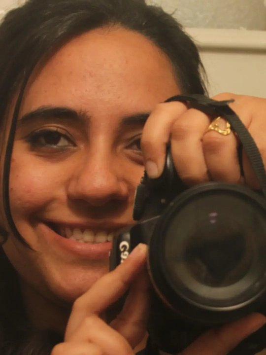

Sweet & Salty
Two strangers in Cairo pursue dreams rooted in their love of food.
View filmCairo, Egypt
Filmmaker · Visual Artist · Storyteller
Stories of memory, connection, and the quiet details of everyday life.

Practice
Amira’s documentaries pay attention to familiar places and the routines that give them meaning. In Mamina, a grandmother’s kitchen holds the memory of a relationship. Biophilia looks outward, at how nature persists amid city life.
About AmiraFilmography
Five films on family, food, and the places we inhabit.

Two strangers in Cairo pursue dreams rooted in their love of food.
View film

A closer look at the nature that persists amid the noise of urban life.
View film
After losing her grandmother, Amira returns to the memories they made together in her kitchen.
View film
How food waste in the supply chain connects to hunger and climate change.
View filmArt & Photography



About
أميرة عبد الفضيل
Amira Mahmoud Abdel-Fadil is an Egyptian filmmaker, photographer, writer, and visual artist based in Cairo. Her work moves between documentary film, photography, and writing.
Read the biography
Writing
Revisiting family albums brings forgotten moments and earlier versions of ourselves into focus.
An essay on the urge to write, the distance between ambition and practice, and the value of continuing.
A reflection on taking chances and showing up when it would be easier to choose comfort.
Social
Find Amira on Instagram, TikTok, and LinkedIn.
Contact
For filmmaking collaborations, creative projects, screenings, and professional enquiries, get in touch with Amira.
Contact Amira